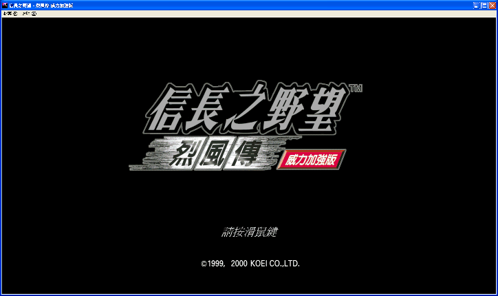
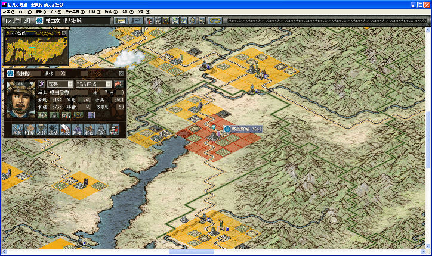

名稱：信長之野望8烈風傳 (Nobunaga's Ambition: Tales of the Storms，中文版) 簡介：KOEI 1999年出品的戰略遊戲，由第三波中文化並代理發行 [待補]。

備註：本版為威力加強版，已修改為免光碟可播放背景音樂。 保護：光碟 備註：網路流傳的免光碟有背景音樂之威力加強版，因其音樂來源光碟檔係以酒精Alchohol 燒錄，第二個以後的音軌都會往前飄移2秒，亦即每一個mp3檔最後面都會播放到下一 個mp3檔前2秒的音樂。本版已修正此問題。